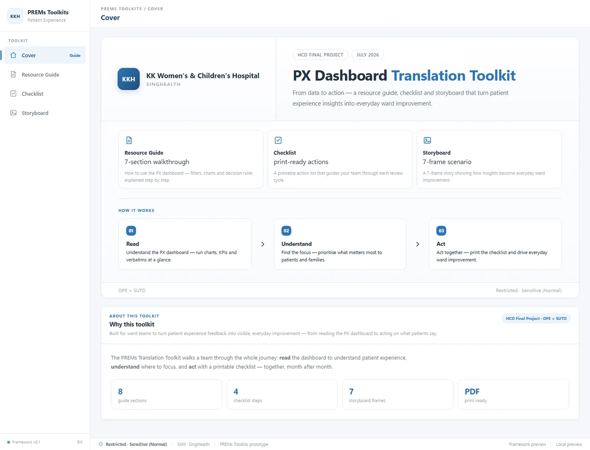
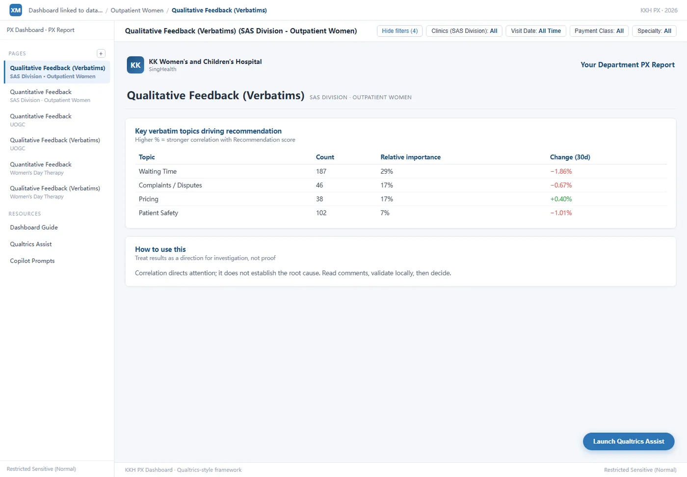
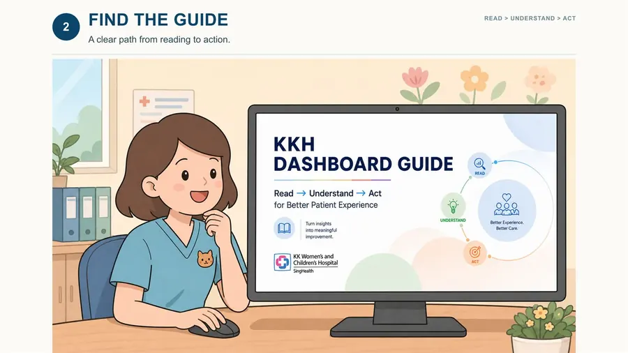
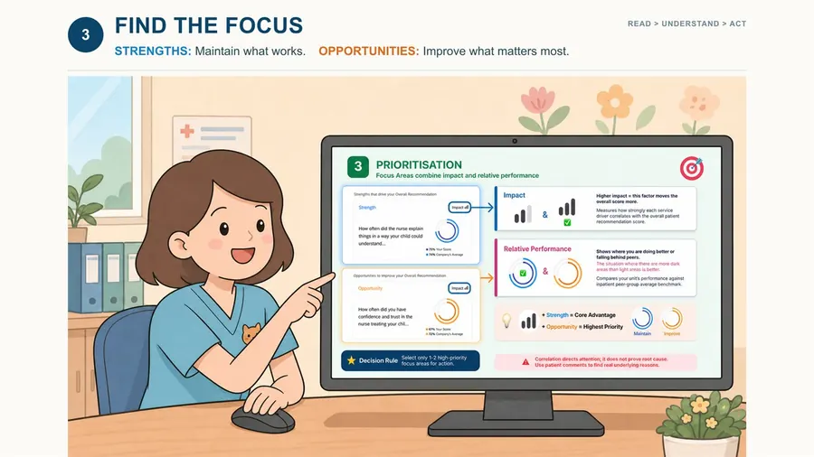

KKH 妇女儿童医院
多指标患者体验看板
让一组没人读完的问卷数据，进入 5 分钟的晨会。
问题不在采集，在读
患者报告体验测量（PREMs）每周回收一批问卷，汇总成指标。数据一直都有，问题是没有人在读——一线真实的工作流是纸：晨会上摊开的是一张打印表，不是屏幕。
我要做的不是再做一个更好的报表，是让这批数据在 5 分钟内变成「今天先做什么」。
四条约束（都不是我定的）
- 三个人要的不同。负责人看趋势，护士长看执行，医生看解释——同一批数字，三种读法。
- 一屏只有几分钟。晨会 5 分钟，不能要求任何人先学一个新工具。
- 真实工作流是纸。病房里摊开的是打印表，屏幕版必须能让位于纸版。
- 拿不到个体数据。只有操作层聚合值，任何单个患者的记录都看不到。
我的角色
研究（访谈三类角色，同一天，各 ≤30 分钟）、架构（把多指标收敛成 3 页模板的动线）、界面（三屏 + 站点三页）、实现（零框架单文件前端）。方案由我定，站点由我一人设计并搭建；院方参与需求确认与评审。

三个人，不是三种需求
同一个项目里，三个角色各说了一堆要求，而且互相矛盾。这是设计里最常见、也最容易处理错的一刻：直觉是排需求优先级。
三层不是三种界面，是三种读法
| 场景 | 谁在看 | 给他的形态 |
|---|---|---|
| 看结果 | 医院负责人：这一周整体在往哪走 | 一张趋势，不做交互 |
| 看执行 | 护士长：今天这一班先盯哪两件事 | 一张清单，能打印 |
| 看解释 | 医生：这个数字为什么是这个数字 | 可展开的来源，不占主屏 |
三个人说的都是「我想要一个能看数据的页面」，但一个人要的是一句话，一个人要的是两件事，一个人要的是来源。把这三样压进同一屏，就是那种所有人都不满意的报表。
从十几个指标到三个数
第一版把所有指标都上，一屏挤满了图表。这是我做过最典型的一次「信息更全 → 判断更准」的错误假设。
留下三个数的三条标准
不是「选最重要的三个」，而是每个留下的数字都必须同时满足三条，缺一条就下沉：
| 条件 | 含义 |
|---|---|
| 带方向 | 升还是降，不能中性——中性的数字不产生动作 |
| 带对象 | 哪个病区、哪个指标——不能只说「整体」 |
| 带下一步 | 动不动、动哪里——读完就知道要做什么 |
反例
「出院说明低于目标。」——这句话只是复述状态，不说是升是降、也不说该动哪里。读者还得自己判断，那就等于没做设计。
替换成的一句是：「三个指标里，只有出院说明在往下走，其余持平。」同样是事实，但它带了方向、对象，也暗示了下一步。
被砍掉的四样
- 环形进度图。读数要换算，5 分钟里没人换算。
- 同比 / 环比双轴。两条线放一起，重点会平均掉。
- 原话直接上首屏。单句有杀伤力，但不指向下一步。
- 领导视角的「总览」。与「今天做什么」是两件事，退到第二层。
不是删掉，是分层——四样都还在系统里，只是不再抢第一屏。
Read / Understand / Act
三屏不是三倍工作量，是同一条判断被拆成三次可以停下的地方。每一屏只回答一个问题。


| 屏 | 回答的问题 | 设计意图 |
|---|---|---|
| Read | 今天整体怎么样，哪一项出了事。 | 不让人做加法：卡片的顺序，就是优先级。 |
| Understand | 这一项为什么出了事，和谁比、跟上周比。 | 同一指标给三种参照：目标线 / 同级均值 / 自己上周。 |
| Act | 今天这一班，谁在什么时候做什么。 | 不是按钮，是四个带责任人和时间的步骤。 |
它必须能打印
三屏做完了，我以为交付完成。实际是：她要的是能拿在手上的东西——晨会上摊开的是纸。
三件套
| 件 | 量 | 一句话 |
|---|---|---|
| Resource Guide | 7 段 | 谁在读、读哪一段、读完之后下一步做什么 |
| Checklist | 4 步 | 能打印，带责任人和时间，一页放得下 |
| Storyboard | 7 帧 | 从打开到采取行动，七帧走完 |
三件套不是交付物清单，是让院方的人在我离开之后还能继续用。
迭代：从「全」到「少」到「能接手」
- v1—v2 把指标搬上屏幕 —— 做的是「全」
- v3 发现读不完，开始收敛层级 —— 做的是「少」
- v4—v5 纸版反推屏幕结构，补状态与交接 —— 做的是「能接手」
它走到「有人愿意接着做」这一步，不是临床部署。 这也是我在简历与作品集里对 KKH 的固定口径。
谁来接手
数据太多 → 一起行动
七帧分镜是给护士长看的，不是给评委看的：每一帧只前进一步，最后一帧是「一起动手」。





→ Find The Guide
→ Find The Focus
→ Find The Printable Checklist
→ Print It
→ Check It
→ Act Together
三个如果重做
这个项目最大的风险不是做得不够，是我做完之后，没有第二次机会验证它。
- 我会在第三版就做一次 5 人可用性测试，而不是到最后版本才验证。教训：验证太晚。
- 我会在第一周就拿到一张真实在用的打印表，而不是自己推测纸版长什么样。教训：约束靠推测，不靠观察。
- 我会把「谁在维护这套界面」提前问清楚，而不是默认有人接。教训：交接想当然。
- 我会把三次访谈拆到三周，而不是压在同一天各 30 分钟。教训：一次问完，只能问到表面。
我说过「不」吗
这个项目里，我没有拒绝过任何需求。现在回头看，这是我最大的缺失——我把「都做」当成了负责。拒绝一个需求需要三个前提：有人在提、你有权说不、你能承担后果。整册五个项目里，只有 KKH 同时具备这三条——而我完全没用上。
如果再做一次，我会把验证提前到第三版。